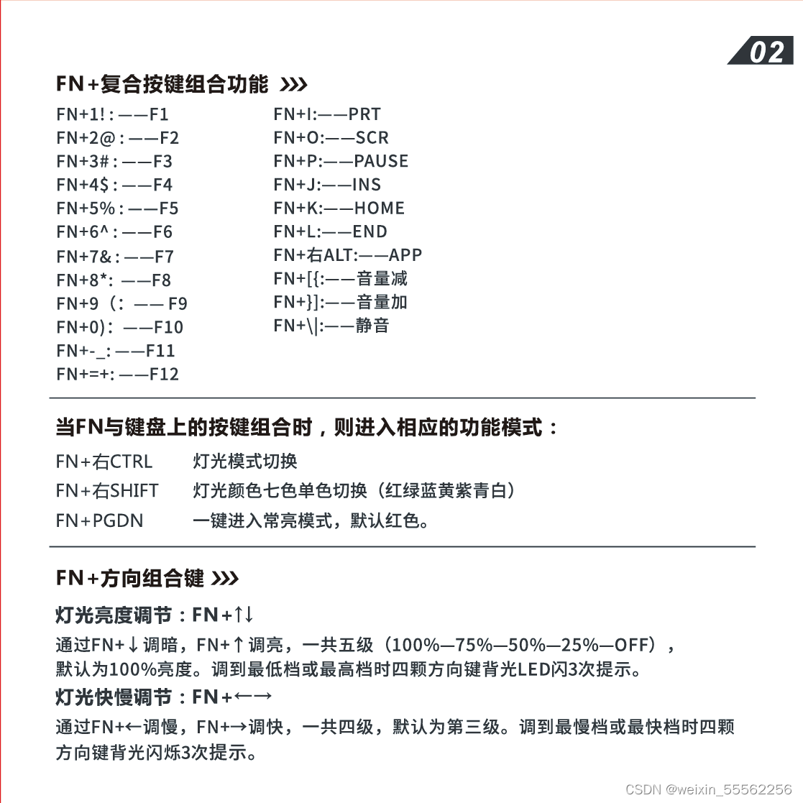
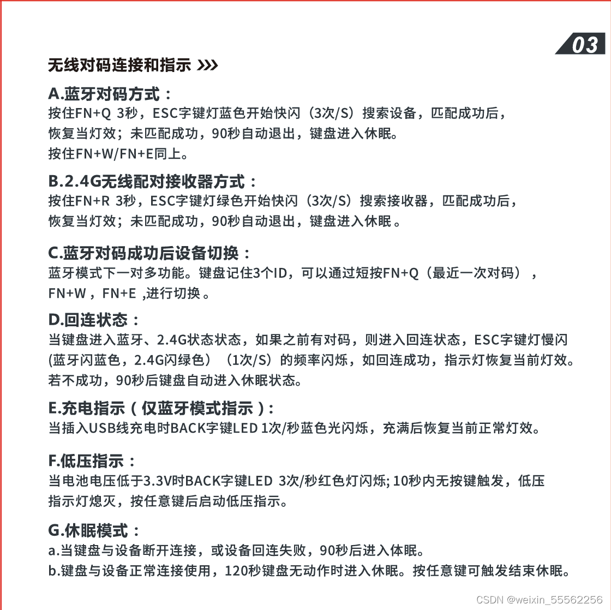
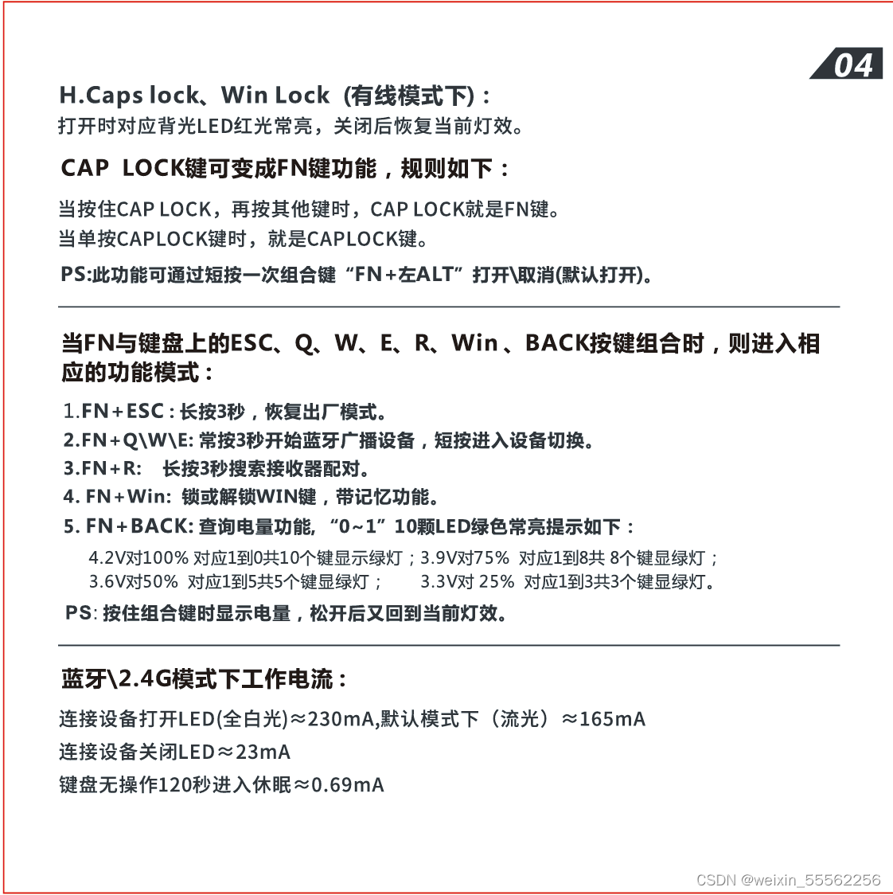
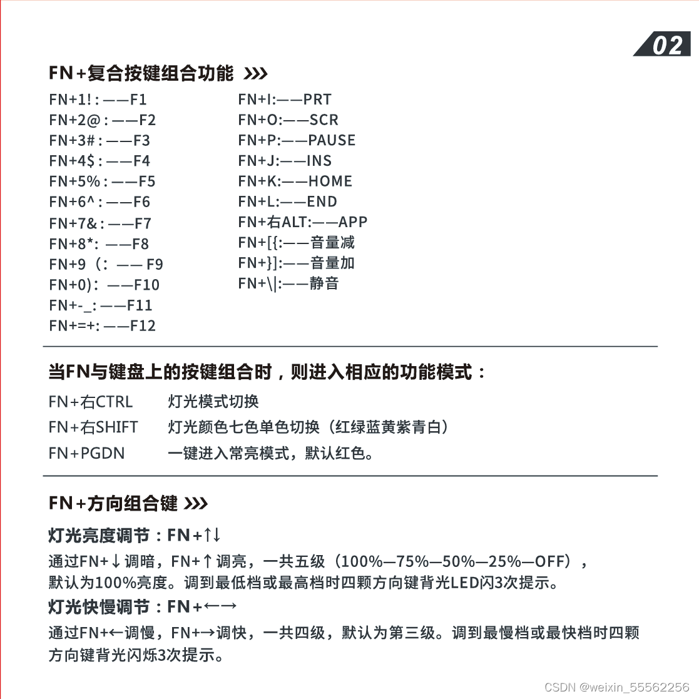
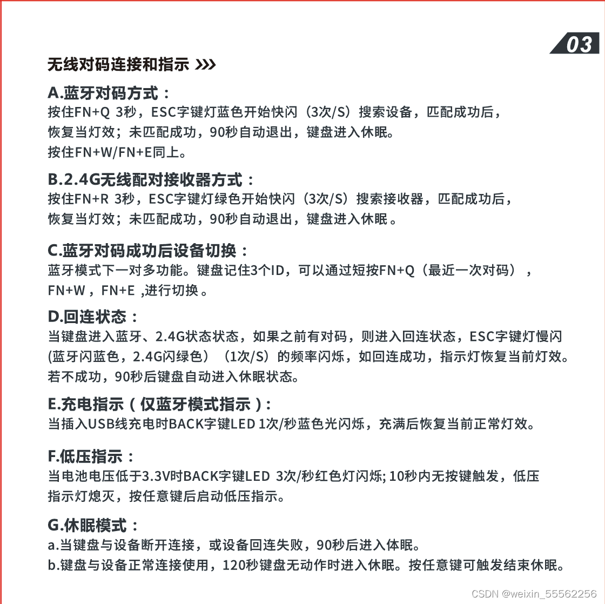
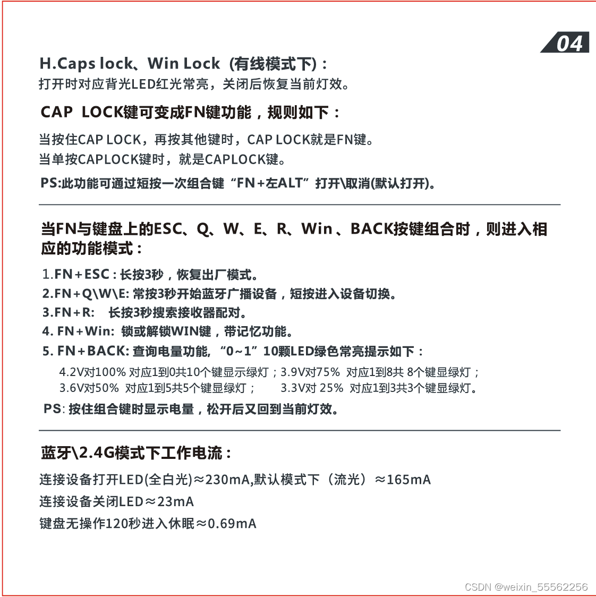

各种快捷键、腹灵F12键盘 |
Excel
Excel 水平滚动： Ctrl+Shift+滚轮
腹灵F12键盘
用 Power Toys 工具将 Caps Locks 键映射成 左Ctrl，有时候突然失效：用Fn+左Alt把键盘自己的“长按Caps Lock”等于Fn键这个功能关闭，就可以了。




各种快捷键、腹灵F12键盘 |
Excel 水平滚动： Ctrl+Shift+滚轮
用 Power Toys 工具将 Caps Locks 键映射成 左Ctrl，有时候突然失效：用Fn+左Alt把键盘自己的“长按Caps Lock”等于Fn键这个功能关闭，就可以了。


